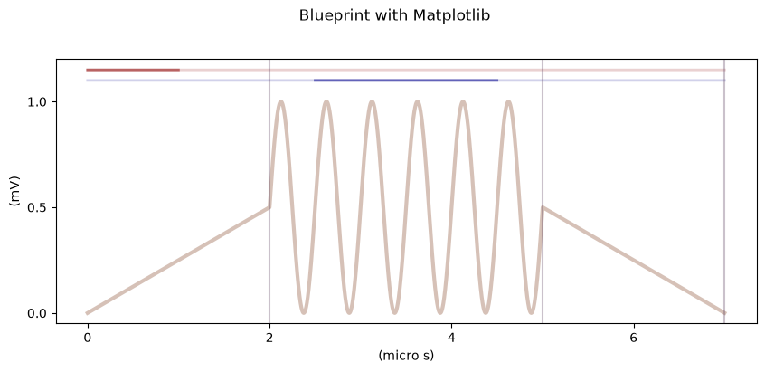
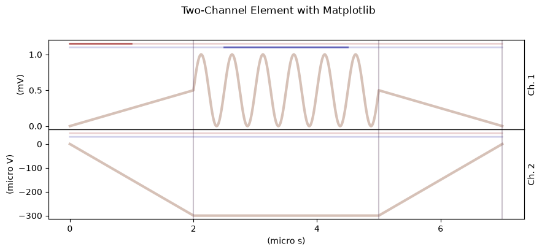
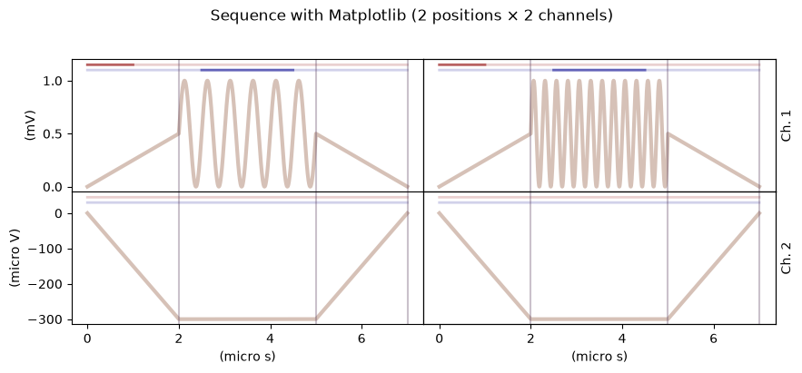
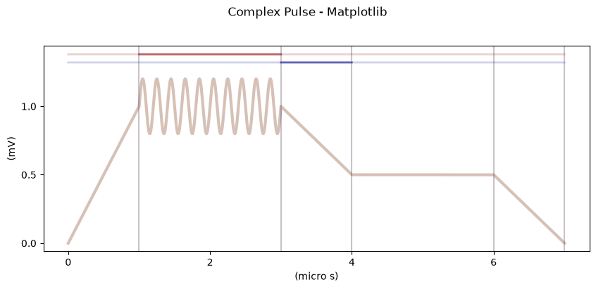

Plotting Examples with Matplotlib and Plotly¶
This notebook demonstrates how to visualize broadbean pulse sequences using both matplotlib and plotly backends.
Table of Contents¶
Setup¶
First, let’s import the necessary modules.
[1]:
import matplotlib as mpl
import broadbean as bb
from broadbean.plotting import plotter
# Configure matplotlib for better display
mpl.rcParams["figure.figsize"] = (10, 4)
mpl.rcParams["figure.subplot.bottom"] = 0.15
Creating Sample Pulses¶
Let’s create some sample blueprints, elements, and sequences that we’ll use for plotting demonstrations.
[2]:
# Get the built-in pulse atoms
ramp = bb.PulseAtoms.ramp # args: start, stop
sine = bb.PulseAtoms.sine # args: freq, ampl, off, phase
# Create a simple blueprint with multiple segments
bp = bb.BluePrint()
bp.insertSegment(0, ramp, (0, 0.5e-3), name="ramp_up", dur=2e-6)
bp.insertSegment(1, sine, (2e6, 0.5e-3, 0.5e-3, 0), name="oscillation", dur=3e-6)
bp.insertSegment(2, ramp, (0.5e-3, 0), name="ramp_down", dur=2e-6)
bp.setSR(1e9) # 1 GS/s sample rate
# Add some markers for demonstration
bp.setSegmentMarker("ramp_up", (0, 1e-6), 1) # Marker 1 during first half of ramp_up
bp.setSegmentMarker("oscillation", (0.5e-6, 2e-6), 2) # Marker 2 during oscillation
print("Blueprint created:")
bp.showPrint()
Blueprint created:
Legend: Name, function, arguments, timesteps, durations
Segment 1: "ramp_up", PulseAtoms.ramp, (0, 0.0005), 2e-06
Segment 2: "oscillation", PulseAtoms.sine, (2000000.0, 0.0005, 0.0005, 0), 3e-06
Segment 3: "ramp_down", PulseAtoms.ramp, (0.0005, 0), 2e-06
----------
[3]:
# Create a second blueprint for multi-channel demonstration
bp2 = bb.BluePrint()
bp2.insertSegment(0, ramp, (0, -0.3e-3), name="init", dur=2e-6)
bp2.insertSegment(1, ramp, (-0.3e-3, -0.3e-3), name="hold", dur=3e-6)
bp2.insertSegment(2, ramp, (-0.3e-3, 0), name="release", dur=2e-6)
bp2.setSR(1e9)
print("Second blueprint created:")
bp2.showPrint()
Second blueprint created:
Legend: Name, function, arguments, timesteps, durations
Segment 1: "init", PulseAtoms.ramp, (0, -0.0003), 2e-06
Segment 2: "hold", PulseAtoms.ramp, (-0.0003, -0.0003), 3e-06
Segment 3: "release", PulseAtoms.ramp, (-0.0003, 0), 2e-06
----------
[4]:
# Create an element with two channels
elem = bb.Element()
elem.addBluePrint(1, bp)
elem.addBluePrint(2, bp2)
print(f"Element created with {len(elem._data)} channels")
print(f"Total duration: {bp.duration * 1e6:.1f} µs")
Element created with 2 channels
Total duration: 7.0 µs
[5]:
# Create a sequence with multiple positions
seq = bb.Sequence()
seq.setSR(1e9)
# Add the element at position 1
seq.addElement(1, elem)
# Create a variation of the element for position 2
bp3 = bp.copy()
bp3.changeArg("oscillation", "freq", 4e6) # Double the frequency
elem2 = bb.Element()
elem2.addBluePrint(1, bp3)
elem2.addBluePrint(2, bp2)
seq.addElement(2, elem2)
# Set AWG specs
seq.setChannelAmplitude(1, 2.5) # 2.5 V amplitude
seq.setChannelAmplitude(2, 2.5)
seq.setChannelOffset(1, 0)
seq.setChannelOffset(2, 0)
print(f"Sequence created with {seq.length_sequenceelements} positions")
Sequence created with 2 positions
Matplotlib Backend¶
The matplotlib backend is the default plotting backend. It creates static plots that are great for documentation and publications.
Plotting Blueprints with Matplotlib¶
[6]:
# Plot a blueprint using matplotlib (default backend)
fig = plotter(bp)
# The plotter returns the matplotlib figure, which can be customized further
fig.suptitle("Blueprint with Matplotlib", fontsize=12, y=1.02)
[6]:
Text(0.5, 1.02, 'Blueprint with Matplotlib')

[7]:
# Explicitly specify the matplotlib backend
fig = plotter(bp, backend="matplotlib")
fig.suptitle("Explicit Matplotlib Backend", fontsize=12, y=1.02)
[7]:
Text(0.5, 1.02, 'Explicit Matplotlib Backend')
Plotting Elements with Matplotlib¶
Elements show all channels side by side.
[8]:
# Plot the multi-channel element
fig = plotter(elem, backend="matplotlib")
fig.suptitle("Two-Channel Element with Matplotlib", fontsize=12, y=1.02)
[8]:
Text(0.5, 1.02, 'Two-Channel Element with Matplotlib')

Plotting Sequences with Matplotlib¶
Sequences show all positions and channels in a grid layout.
[9]:
# Plot the full sequence
fig = plotter(seq, backend="matplotlib")
fig.suptitle("Sequence with Matplotlib (2 positions × 2 channels)", fontsize=12, y=1.02)
[9]:
Text(0.5, 1.02, 'Sequence with Matplotlib (2 positions × 2 channels)')

Plotly Backend¶
The plotly backend creates interactive plots that allow zooming, panning, and hovering over data points.
Note: To use the plotly backend, you need to have plotly installed:
pip install plotly
or
pip install broadbean[plotly]
Plotting Blueprints with Plotly¶
[10]:
# Plot a blueprint using the plotly backend
fig = plotter(bp, backend="plotly")
# Update the layout title
fig.update_layout(title="Blueprint with Plotly - Interactive!")
fig.show()
---------------------------------------------------------------------------
ModuleNotFoundError Traceback (most recent call last)
File /opt/hostedtoolcache/Python/3.12.16/x64/lib/python3.12/site-packages/broadbean/plotting.py:357, in _plot_plotly(obj_to_plot, seq, chans, seqlen, chanminmax)
356 try:
--> 357 from plotly import graph_objects as go
358 from plotly.subplots import make_subplots
ModuleNotFoundError: No module named 'plotly'
During handling of the above exception, another exception occurred:
ImportError Traceback (most recent call last)
Cell In[10], line 2
1 # Plot a blueprint using the plotly backend
----> 2 fig = plotter(bp, backend="plotly")
3
4 # Update the layout title
5 fig.update_layout(title="Blueprint with Plotly - Interactive!")
File /opt/hostedtoolcache/Python/3.12.16/x64/lib/python3.12/site-packages/broadbean/plotting.py:743, in plotter(obj_to_plot, backend, max_subsequences, **forger_kwargs)
741 return _plot_matplotlib(obj_to_plot, seq, chans, seqlen, chanminmax)
742 else: # backend == "plotly"
--> 743 return _plot_plotly(obj_to_plot, seq, chans, seqlen, chanminmax)
File /opt/hostedtoolcache/Python/3.12.16/x64/lib/python3.12/site-packages/broadbean/plotting.py:360, in _plot_plotly(obj_to_plot, seq, chans, seqlen, chanminmax)
358 from plotly.subplots import make_subplots
359 except ImportError:
--> 360 raise ImportError(
361 "plotly is required for the 'plotly' backend. "
362 "Install it with: pip install broadbean[plotly]"
363 )
365 # Create subplots
366 fig = make_subplots(
367 rows=len(chans),
368 cols=seqlen,
(...) 371 vertical_spacing=0.0,
372 )
ImportError: plotly is required for the 'plotly' backend. Install it with: pip install broadbean[plotly]
Plotting Elements with Plotly¶
[11]:
# Plot the multi-channel element with plotly
fig = plotter(elem, backend="plotly")
fig.update_layout(
title="Two-Channel Element with Plotly",
height=500, # Adjust height for better visibility
)
fig.show()
---------------------------------------------------------------------------
ModuleNotFoundError Traceback (most recent call last)
File /opt/hostedtoolcache/Python/3.12.16/x64/lib/python3.12/site-packages/broadbean/plotting.py:357, in _plot_plotly(obj_to_plot, seq, chans, seqlen, chanminmax)
356 try:
--> 357 from plotly import graph_objects as go
358 from plotly.subplots import make_subplots
ModuleNotFoundError: No module named 'plotly'
During handling of the above exception, another exception occurred:
ImportError Traceback (most recent call last)
Cell In[11], line 2
1 # Plot the multi-channel element with plotly
----> 2 fig = plotter(elem, backend="plotly")
3 fig.update_layout(
4 title="Two-Channel Element with Plotly",
5 height=500, # Adjust height for better visibility
File /opt/hostedtoolcache/Python/3.12.16/x64/lib/python3.12/site-packages/broadbean/plotting.py:743, in plotter(obj_to_plot, backend, max_subsequences, **forger_kwargs)
741 return _plot_matplotlib(obj_to_plot, seq, chans, seqlen, chanminmax)
742 else: # backend == "plotly"
--> 743 return _plot_plotly(obj_to_plot, seq, chans, seqlen, chanminmax)
File /opt/hostedtoolcache/Python/3.12.16/x64/lib/python3.12/site-packages/broadbean/plotting.py:360, in _plot_plotly(obj_to_plot, seq, chans, seqlen, chanminmax)
358 from plotly.subplots import make_subplots
359 except ImportError:
--> 360 raise ImportError(
361 "plotly is required for the 'plotly' backend. "
362 "Install it with: pip install broadbean[plotly]"
363 )
365 # Create subplots
366 fig = make_subplots(
367 rows=len(chans),
368 cols=seqlen,
(...) 371 vertical_spacing=0.0,
372 )
ImportError: plotly is required for the 'plotly' backend. Install it with: pip install broadbean[plotly]
Plotting Sequences with Plotly¶
[12]:
# Plot the full sequence with plotly
fig = plotter(seq, backend="plotly")
fig.update_layout(title="Sequence with Plotly (2 positions × 2 channels)", height=600)
fig.show()
---------------------------------------------------------------------------
ModuleNotFoundError Traceback (most recent call last)
File /opt/hostedtoolcache/Python/3.12.16/x64/lib/python3.12/site-packages/broadbean/plotting.py:357, in _plot_plotly(obj_to_plot, seq, chans, seqlen, chanminmax)
356 try:
--> 357 from plotly import graph_objects as go
358 from plotly.subplots import make_subplots
ModuleNotFoundError: No module named 'plotly'
During handling of the above exception, another exception occurred:
ImportError Traceback (most recent call last)
Cell In[12], line 2
1 # Plot the full sequence with plotly
----> 2 fig = plotter(seq, backend="plotly")
3 fig.update_layout(title="Sequence with Plotly (2 positions × 2 channels)", height=600)
4 fig.show()
File /opt/hostedtoolcache/Python/3.12.16/x64/lib/python3.12/site-packages/broadbean/plotting.py:743, in plotter(obj_to_plot, backend, max_subsequences, **forger_kwargs)
741 return _plot_matplotlib(obj_to_plot, seq, chans, seqlen, chanminmax)
742 else: # backend == "plotly"
--> 743 return _plot_plotly(obj_to_plot, seq, chans, seqlen, chanminmax)
File /opt/hostedtoolcache/Python/3.12.16/x64/lib/python3.12/site-packages/broadbean/plotting.py:360, in _plot_plotly(obj_to_plot, seq, chans, seqlen, chanminmax)
358 from plotly.subplots import make_subplots
359 except ImportError:
--> 360 raise ImportError(
361 "plotly is required for the 'plotly' backend. "
362 "Install it with: pip install broadbean[plotly]"
363 )
365 # Create subplots
366 fig = make_subplots(
367 rows=len(chans),
368 cols=seqlen,
(...) 371 vertical_spacing=0.0,
372 )
ImportError: plotly is required for the 'plotly' backend. Install it with: pip install broadbean[plotly]
Comparing Backends¶
Here’s a quick summary of when to use each backend:
Feature |
Matplotlib |
Plotly |
|---|---|---|
Interactive zoom/pan |
❌ |
✅ |
Hover information |
❌ |
✅ |
Static export (PNG, PDF) |
✅ Excellent |
✅ Good |
Publication quality |
✅ |
✅ |
Jupyter notebook |
✅ |
✅ |
No extra dependencies |
✅ |
❌ (requires plotly) |
Recommendations:
Use matplotlib for publications, reports, and when you need fine control over the figure styling.
Use plotly for interactive exploration, debugging pulse shapes, and presentations.
[13]:
# Create a more complex blueprint to showcase the backends
bp_complex = bb.BluePrint()
bp_complex.insertSegment(0, ramp, (0, 1e-3), name="charge", dur=1e-6)
bp_complex.insertSegment(1, sine, (5e6, 0.2e-3, 1e-3, 0), name="pulse", dur=2e-6)
bp_complex.insertSegment(2, ramp, (1e-3, 0.5e-3), name="measure", dur=1e-6)
bp_complex.insertSegment(3, ramp, (0.5e-3, 0.5e-3), name="hold", dur=2e-6)
bp_complex.insertSegment(4, ramp, (0.5e-3, 0), name="reset", dur=1e-6)
bp_complex.setSR(1e9)
# Add markers
bp_complex.setSegmentMarker("pulse", (0, 2e-6), 1)
bp_complex.setSegmentMarker("measure", (0, 1e-6), 2)
print("Complex blueprint structure:")
bp_complex.showPrint()
Complex blueprint structure:
Legend: Name, function, arguments, timesteps, durations
Segment 1: "charge", PulseAtoms.ramp, (0, 0.001), 1e-06
Segment 2: "pulse", PulseAtoms.sine, (5000000.0, 0.0002, 0.001, 0), 2e-06
Segment 3: "measure", PulseAtoms.ramp, (0.001, 0.0005), 1e-06
Segment 4: "hold", PulseAtoms.ramp, (0.0005, 0.0005), 2e-06
Segment 5: "reset", PulseAtoms.ramp, (0.0005, 0), 1e-06
----------
[14]:
# Matplotlib version
print("Matplotlib output:")
fig_mpl = plotter(bp_complex, backend="matplotlib")
fig_mpl.suptitle("Complex Pulse - Matplotlib", y=1.02)
Matplotlib output:
[14]:
Text(0.5, 1.02, 'Complex Pulse - Matplotlib')

[15]:
# Plotly version
print("Plotly output (interactive - try zooming!):")
fig_plotly = plotter(bp_complex, backend="plotly")
fig_plotly.update_layout(title="Complex Pulse - Plotly (Interactive)")
fig_plotly.show()
Plotly output (interactive - try zooming!):
---------------------------------------------------------------------------
ModuleNotFoundError Traceback (most recent call last)
File /opt/hostedtoolcache/Python/3.12.16/x64/lib/python3.12/site-packages/broadbean/plotting.py:357, in _plot_plotly(obj_to_plot, seq, chans, seqlen, chanminmax)
356 try:
--> 357 from plotly import graph_objects as go
358 from plotly.subplots import make_subplots
ModuleNotFoundError: No module named 'plotly'
During handling of the above exception, another exception occurred:
ImportError Traceback (most recent call last)
Cell In[15], line 3
1 # Plotly version
2 print("Plotly output (interactive - try zooming!):")
----> 3 fig_plotly = plotter(bp_complex, backend="plotly")
4 fig_plotly.update_layout(title="Complex Pulse - Plotly (Interactive)")
5 fig_plotly.show()
File /opt/hostedtoolcache/Python/3.12.16/x64/lib/python3.12/site-packages/broadbean/plotting.py:743, in plotter(obj_to_plot, backend, max_subsequences, **forger_kwargs)
741 return _plot_matplotlib(obj_to_plot, seq, chans, seqlen, chanminmax)
742 else: # backend == "plotly"
--> 743 return _plot_plotly(obj_to_plot, seq, chans, seqlen, chanminmax)
File /opt/hostedtoolcache/Python/3.12.16/x64/lib/python3.12/site-packages/broadbean/plotting.py:360, in _plot_plotly(obj_to_plot, seq, chans, seqlen, chanminmax)
358 from plotly.subplots import make_subplots
359 except ImportError:
--> 360 raise ImportError(
361 "plotly is required for the 'plotly' backend. "
362 "Install it with: pip install broadbean[plotly]"
363 )
365 # Create subplots
366 fig = make_subplots(
367 rows=len(chans),
368 cols=seqlen,
(...) 371 vertical_spacing=0.0,
372 )
ImportError: plotly is required for the 'plotly' backend. Install it with: pip install broadbean[plotly]